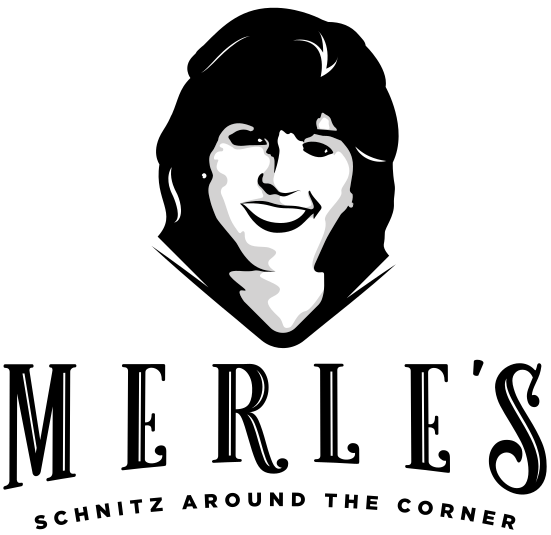

Last night a pizza saved my life.
Hand-rolled thin bases and a 7-hour slow-cooked Roma tomato sauce. On the festival circuit, and delivered from our dark kitchen.
Enter Tommy Sugo →
Let's get schnitzfaced.
Proper chicken schnitz from a delivery kitchen. No counter, no queue, straight to your door.
Enter Merle's →